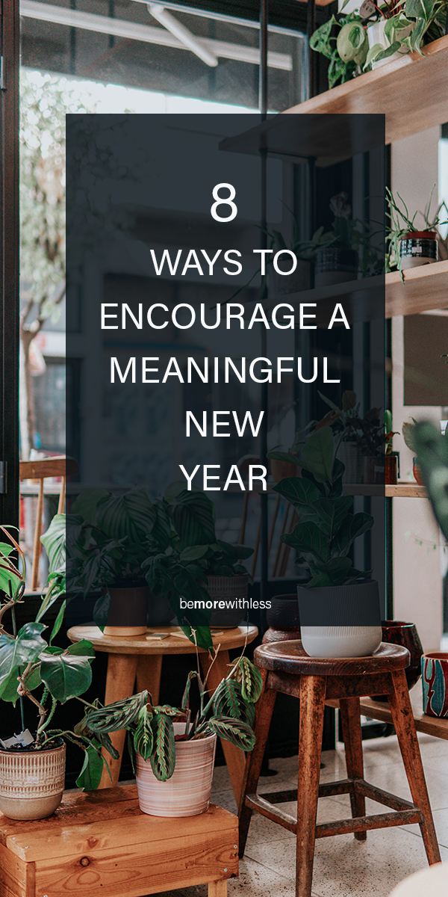
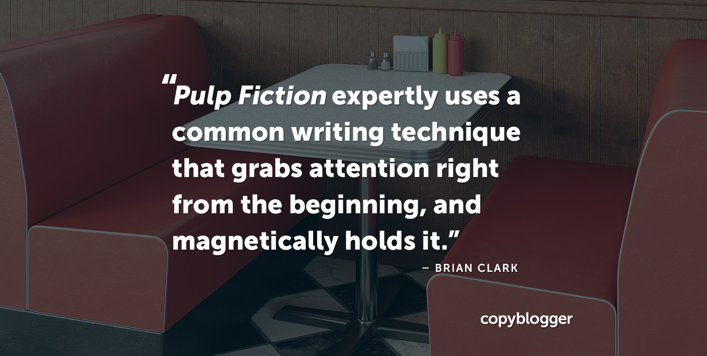

8 Ways to Encourage a Meaningful New Year
by Courtney Carver, Dec 14, 2020
I love a gentle transition from one year to the next and linger in that transition twice a year, in December and again in June when I celebrate my own brand new year.
Instead of holding onto expectations of ourselves or others and keeping a firm grip on goals, it feels healthier to create a few times a year to check in, assess, edit, and move forward. Being more intentional about what we want (and don’t want) in our lives allows us to not only make progress towards changes we are making but gives us a chance to learn and enjoy along the way.
Continue ReadingThe 'Pulp Fiction' Technique for Engaging and Persuasive Content
written by Brian Clark, Dec 12, 2020
You've seen Pulp Fiction, right? It's the classic 1994 dark comedy crime film written and directed by Quentin Tarantino.
The film is highly stylized, presented out of chronological order, and filled with eclectic dialogue that reveals each character's perspectives on various subjects. And yes, it's profane and violent. Pulp Fiction was nominated for seven Oscars, including Best Picture. Tarantino and his co-writer Roger Avary won for Best Original Screenplay, which is truly the foundation of an exceptional film.
Continue Reading